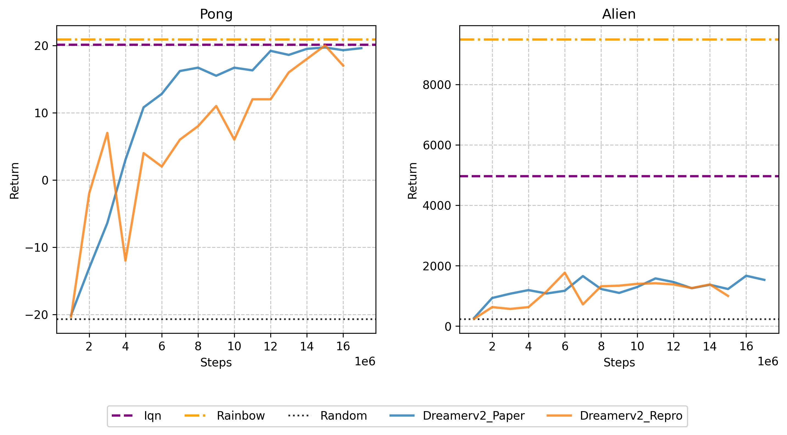
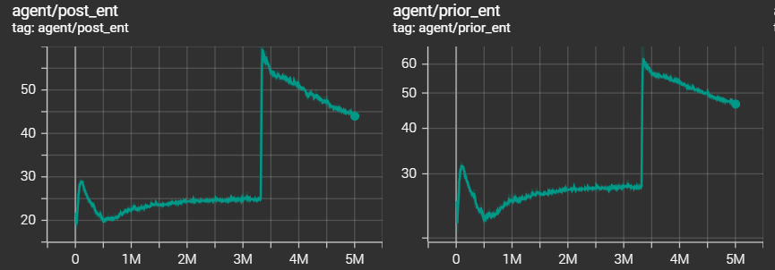

进度:
6月中旬(期末复习带着配置)尝试配置dreamerv2环境.(由于之前寒假当时配planet环境版本较旧遇到了不少问题于是考虑先配dreamerv2,离得近些)
配置mujoco+dm_control遇到了一些问题,多次尝试后解决.安装方法见dm-control+mujoco安装教程.txt.
按照网站说明配置各个环境.遇到较多例如版本不兼容问题,参考了网站https://tencentcloud.csdn.net/676293c6f3b8a55e4e989994.html等.最终测试可用的conda list各个版本见something_useful.txt.
(改了例如gym, pip等等版本,具体记不清了,不过最后conda虚拟环境测试能用)
意料之外地但是确实还用了挺多时间.
dreamerv2论文运行测试: 用的默认的dmc_walker_walk(1e8)和atari_pong(4×5e7=2e8),看论文说DreamerV2 reaches 200M environment steps in under 10 days, while using only a single NVIDIA V100 GPU and a single environment instance.days,尝试跑了下然后时间确实很长于是考虑先跑一跑短一点的dreamer(5e6)(初步看了下代码框架也就没有去做消融实验).(没有预估好在服务器上跑到差不多一千六百万时候存储不够终止了)
下面是dmc和atari的运行结果和论文结果的大致比较示意图:


下面是对原来的plot.py代码适当修改后绘制的包含四个评价指标的图像:

Montezuma Revenge任务一直为0,和论文中比较应该是discount没有设置成论文中调整的0.99然后训练时间还不够.
暂时转向了dreamerv1(dreamer).Dreamerv2的绘图程序相较Dreamer似乎更加完善.于是考虑将dreamerv2的绘图方法直接用到dreamer中,并做了适当修改.
选择dreamer论文中Figure 7的8个任务(Acrobot Swingup, Cartpole Swingup Sparse, Hopper Hop, Hopper Stand, Pendulum Swingup, Quadruped Walk, Walker Run, Walker Walk, 然后考虑到Quadruped Walk没有几个可对比的baselines,于是换成了Cheetah Run). 结果如下图:

和原论文基本一致.(Cartpole Swingup Sparse有过一段急剧下降,但是又迅速上升到基本原来的高return,没有太大影响.可能是智能体为了探索新策略(如尝试更激进的摆杆动作),会主动采取随机行为.若探索的新动作导致摆杆频繁倒地、偏离目标,奖励会急剧下降(对应曲线下跌段)),从下面的熵值图也可以看出.

类似原论文Figure 6绘制了四种方法的return对比柱形图(对plotting.py作了一些修改).和原论文对比基本类似.Dreamer较其他三种模型return更高.

对原论文Figure 5左半图的绘制(选择的任务为Hopper Stand和Walker Walk):
reconstruction model得到的图像一定程度上能够反应真实图像信息.
消融分析:
(由于运行时长原因,仅选取一个dmc任务对比分析,这里选取Hopper Hop任务(需要long horizon))
1.对比了附录F所示的动作重复次数对return的影响,默认设置action_repeat = 2确实return最高,但是和论文不同的是论文的曲线显示Repeat 4整体比Repeat 1的return要高,但是我们绘制的如下曲线显示并非如此.

2.对比了Figure 7对于是否有value model对return的影响(对dreamer.py略做了改动,相应地添加一个config.no_value标记).
可见若仅通过动作模型或在线规划优化 “想象视野内” 的奖励,会产生短视行为,而Dreamer在需要长视野信用分配的视觉控制任务(如该hopper任务)中取得成功.
3.Dreamer + Reconstruction和Dreamer + Contrastive的return对比.原论文在4 LEARNING LATENT DYNAMICS部分给出了两种损失的定义，差距仅在于 (观测重建项,对应Observation model) 和 (对比损失项,对应State model), 而 (奖励预测项,对应Reward model) 和 (KL正则项(约束表示模型(后验)和转移模型(先验)的分布接近))是一致的.附录B似乎证明了, 所以Dreamer + Reconstruction应该效果上要比Dreamer + Contrastive要强.
已知reconstruction在dreamer.py的实现代码流程大致如下(主要在_train函数中):

正在尝试实现contrastive方法,目前还没有成功.正在进一步阅读dreamerv1代码实现细节.